스마트 출역관리 시스템
안전한 현장관리는
출입구에서 시작됩니다
비접촉 생체인증으로 신원을 확인하고
음주·체온 측정 등 출입 전 점검을 통합 관리합니다.
전자카드 단말기로 출입 및 근로일수를 자동 기록하고,
현장 환경에 맞춘 출입 시스템을 구축합니다.
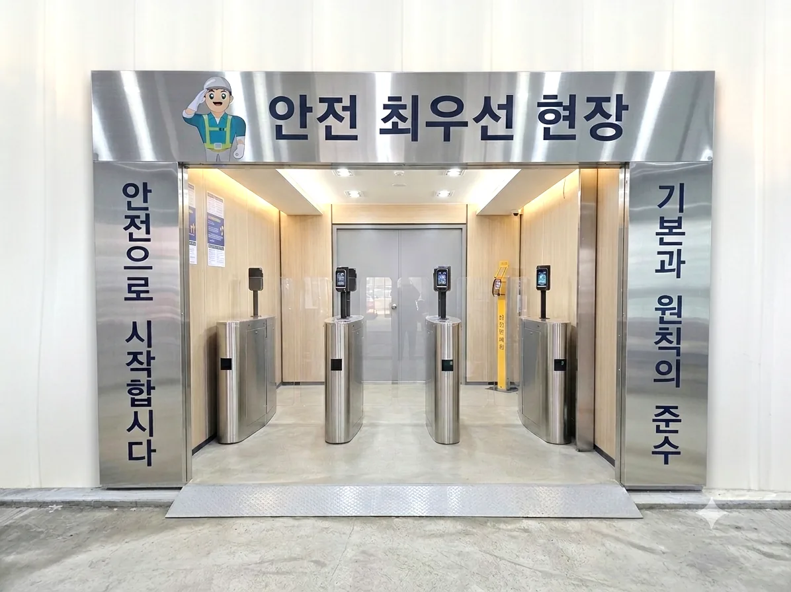
도입 효과
- 01
대리 출근과 무자격자 출입 차단으로 정확한 근로자 현황 확보
- 02
화재 · 붕괴 등 비상시 현장 내 인원을 빠르게 파악해 대피와 구조에 활용
- 03
출입과 근로일수 자동 기록으로 퇴직공제 신고 누락 방지
- 04
출입 현황을 관제 화면에 실시간 표시해 현장 사무소 업무 부담 감소
- 05
전자카드제 의무 대상 확대(공공 1억 원, 민간 50억 원 이상)에 대응
제품 구성
출입 인식기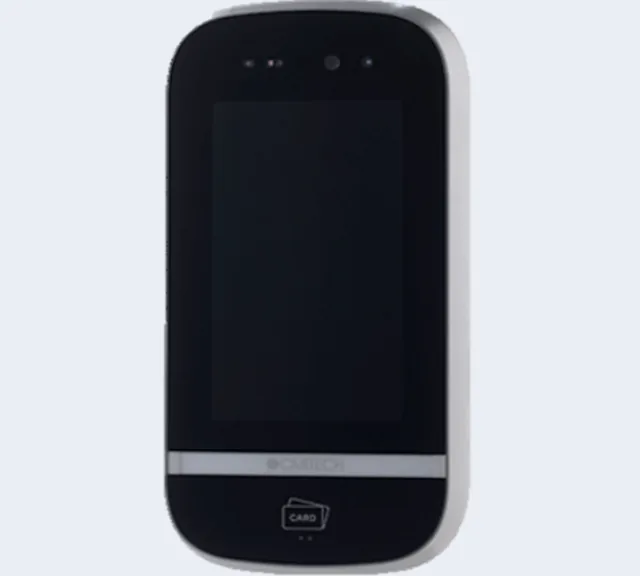
안면 인식기비접촉 얼굴 인식으로 신속하게 출입을 인증하고 사진 등 위조 얼굴을 식별합니다.
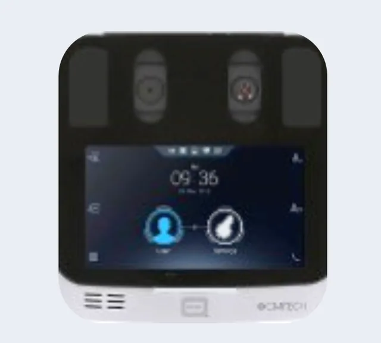
홍채 인식기높은 정확도의 홍채 인증으로 대규모 인원이 출입하는 현장에 적합하며, 위조 홍채를 감지합니다.
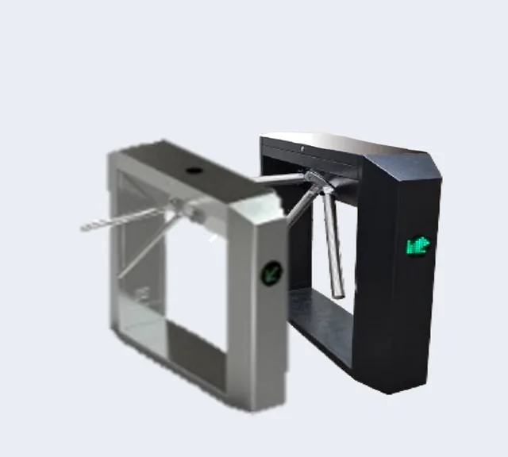
턴게이트 (보급형/고급형)한 명씩 통과하도록 통제하는 회전식 게이트로, 현장 여건에 맞게 선택합니다.
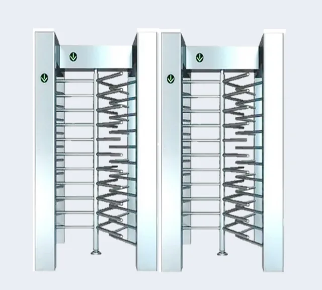
전신게이트전신 높이의 회전식 구조로 무단 통과와 틈새 침입을 효과적으로 차단합니다.
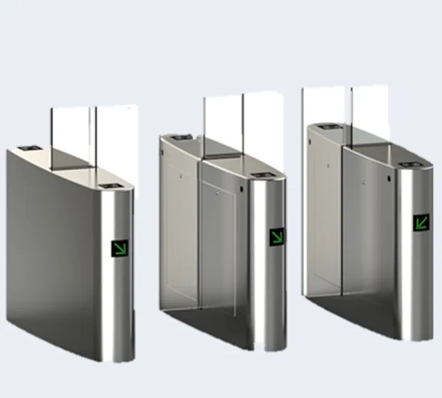
스피드게이트빠른 개폐로 출근 시간대 혼잡을 줄이고 자연스러운 출입 흐름을 만듭니다.
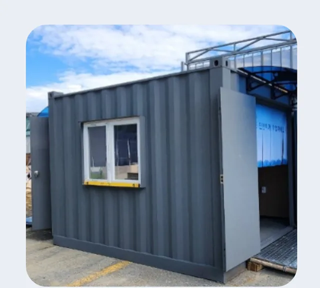
3X3 컨테이너외부 색상과 내부 마감은 옵션으로 제공합니다.
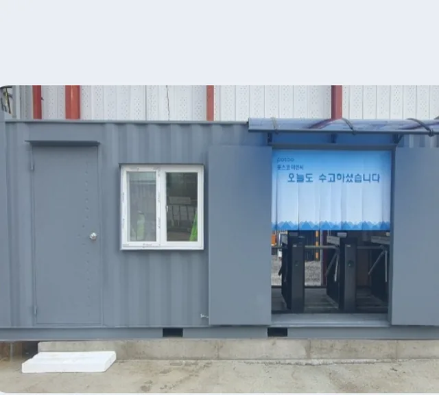
3X6 컨테이너외부 색상과 내부 마감은 옵션으로 제공합니다.
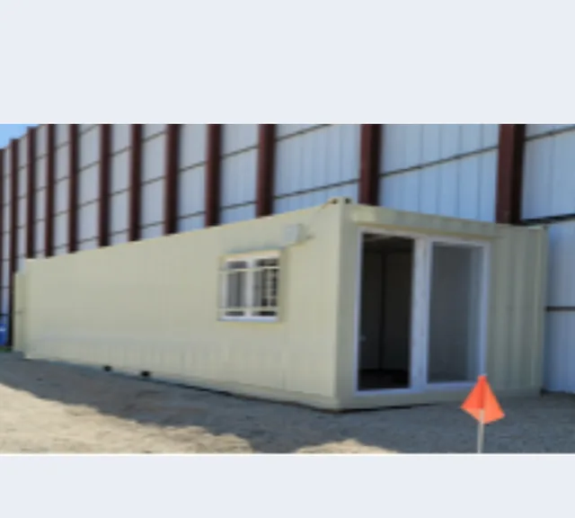
3X9 컨테이너외부 색상과 내부 마감은 옵션으로 제공합니다.
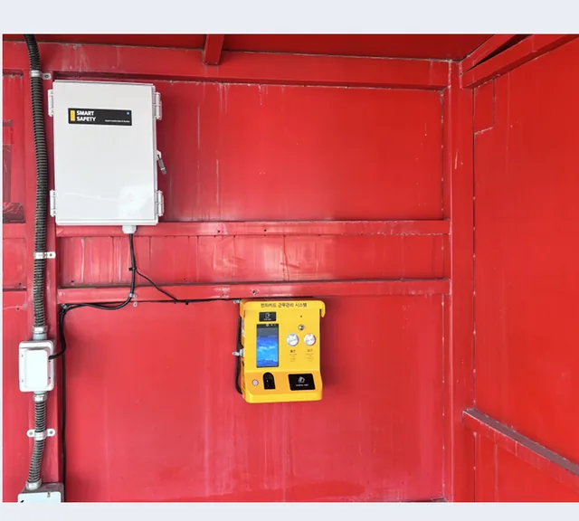
벽부형벽면에 고정해 설치하는 단말기로 출입구 주변 공간을 효율적으로 활용합니다.
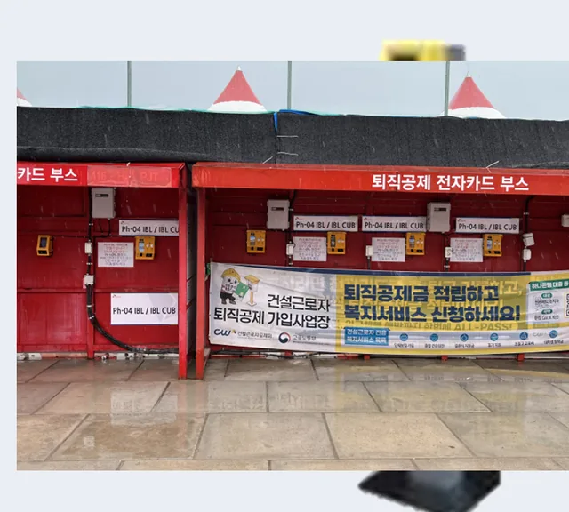
부스형 / 스탠드형독립 설치가 가능해 출입 동선에 맞게 배치할 수 있습니다.
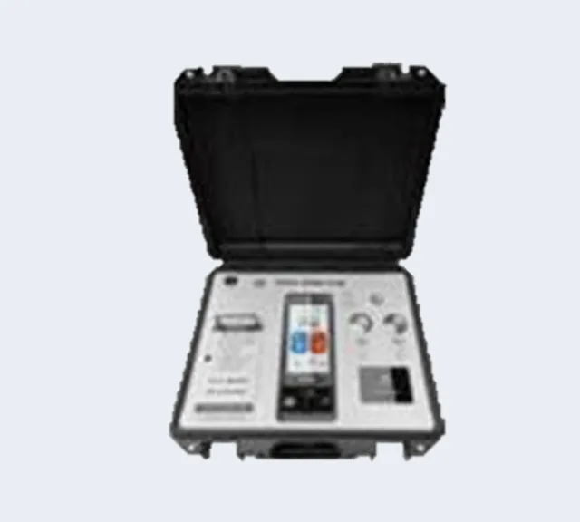
이동형휴대와 이동이 쉬워 현장 변경이나 임시 출입구 운영에 유리합니다.